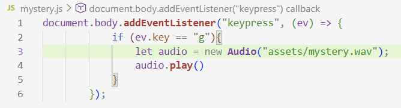

What is the Secret? Why don't you find out, source peeker
Cheryl lied about her Secret. I want to make sure that I don't suffer the same.
if you Really want to know the Secret..
well i'll just tell you what the goal with all this is.
My goal with the Mystery is that I want to include the same Secret in everything that I create.
Maybe as some sort of exercise for user input and audio playback
(cough cough. what? cough.)
It has been a giant headache trying to get the Secret to work on every page. I managed to figure out a way, but I'm still not very satisfied. HTML is really not designed for scale without external automation tools in mind, such as static site generator. I choose not to use one and I am suffering the consequences of my actions.
So, I have this JavaScript Script™ that starts my Secret

The Plan: connect this script to every HTML page.
The Problem: the path to my Mysterious Wav File is based on the HTML file, not the JavaScript Script™.
This means that if I have it connected into a subfolder, it won't be able to find my Mysterious Wav File.
The first idea was to just copy the Mysterious Wav File into every subfolder, which is obviously ridiculous.
So I didn't end up doing that.
The solution I came up with was to have a copy of my JavaScript Script™ that adds "../" to the beginning of the path for pages that are one folder deep. It's still not pretty, but you know what they(me) say, If it werks it twerks.